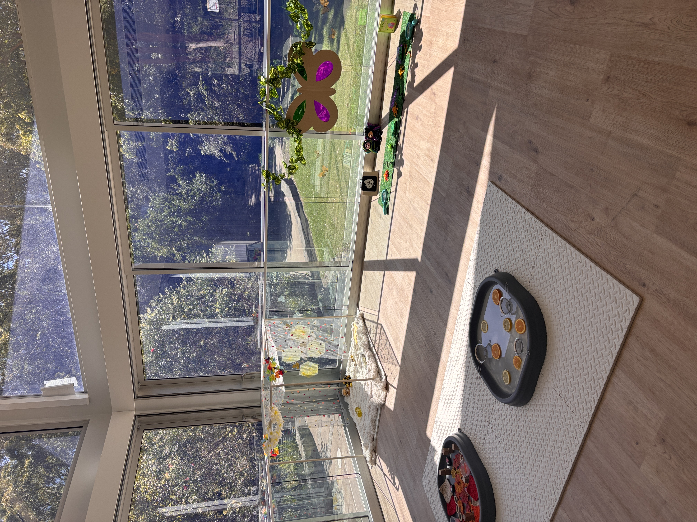
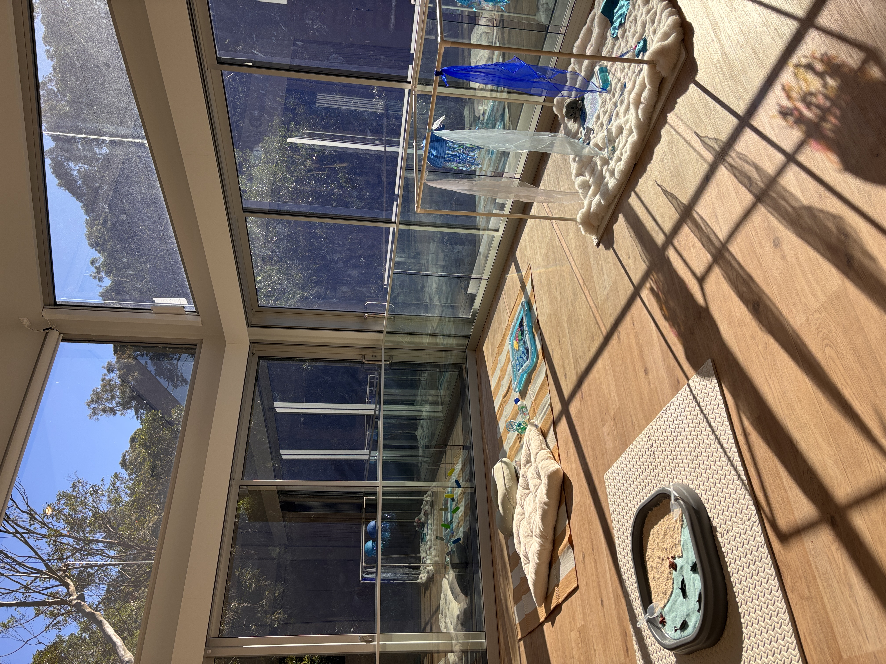
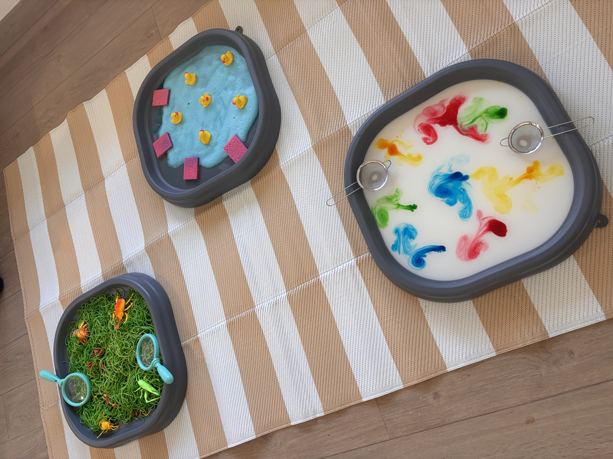
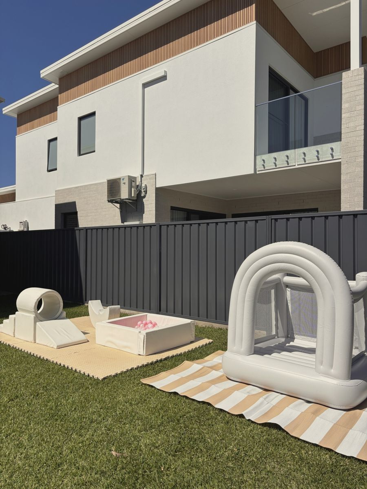
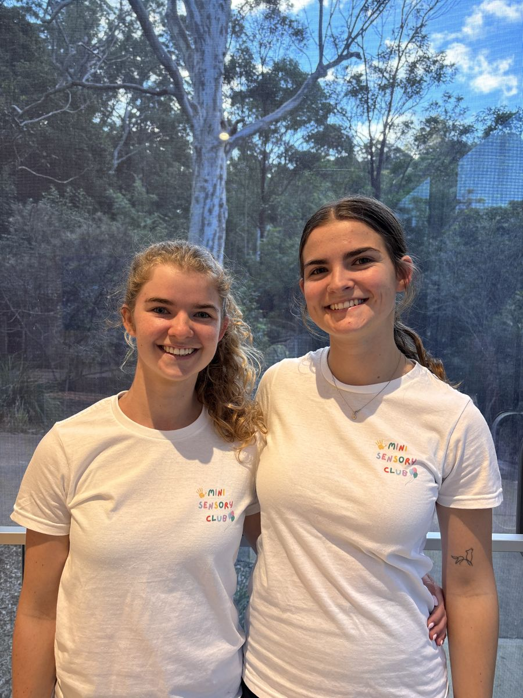

Mini Sensory Play in Newcastle
Inspiring Curious Little Minds Through Sensory Play
Boutique sensory play experiences for babies, toddlers and young children, designed to support learning, confidence, creativity and connection.

Our Services
Sensory Play for Classes, Centres and Celebrations
Mini Sensory Club offers weekly sensory classes, childcare centre incursions and soft play party hire.

Weekly Sensory Classes
Calm, engaging weekly classes for babies and toddlers to explore, play and grow.
Learn More

Childcare Centre Incursions
Mobile sensory play sessions delivered directly to early learning centres.
Learn More

Soft Play Party Hire
Colourful soft play setups for birthdays, private parties and special events.
Learn More
Community Events
Upcoming Events
Special get-togethers for our Mini Sensory Club families.

Meet the Founders
Created by Sisters Ruby and Arabella
Mini Sensory Club was created with a shared passion for early childhood learning, playful development and meaningful connection between children and families.
With backgrounds in early childhood, education and child development, Ruby and Arabella bring warmth, care and professional experience into every session.
Meet Ruby & BellaWhy Sensory Play?
Learning Through Touch, Movement and Discovery
Sensory play gives children opportunities to explore, problem solve, communicate and build confidence through hands-on experiences.
Fine Motor Skills
Supports grasping, reaching, pouring, squeezing and hand control.
Language Development
Encourages children to describe, respond, interact and communicate.
Confidence
Builds independence as children try new textures, tools and activities.
Social Skills
Provides gentle opportunities for turn-taking, sharing and connection.
Cognitive Development
Supports curiosity, problem solving, memory and early thinking skills.
Creativity
Encourages imagination, expression and open-ended exploration.
Parent Feedback
Loved by Local Families
★★★★★
“These girls have so much love to give and take a genuine interest in your babies but also the parents too. They have created a warm, welcoming and enjoyable environment for children to be appreciated and supported in their development. It’s a highlight seeing these ladies each week and we have made so many wonderful friends in the process of attending these classes.”
★★★★★
“The whole experience is beautifully child led, creating open ended opportunities for children to follow their own curiosity, make their own choices and forge their own little paths through play.”
★★★★★
“I’ve shown up late, anxious, sleep deprived and have always been treated with kindness, understanding, and been offered support. Ruby and Arabella are so incredibly wonderful in all aspects of this business and we’ve been made to feel like a treasured part of a community since the first day we popped in.”
Follow Along
Latest Mini Sensory Adventures
See what we've been getting up to in class and behind the scenes.